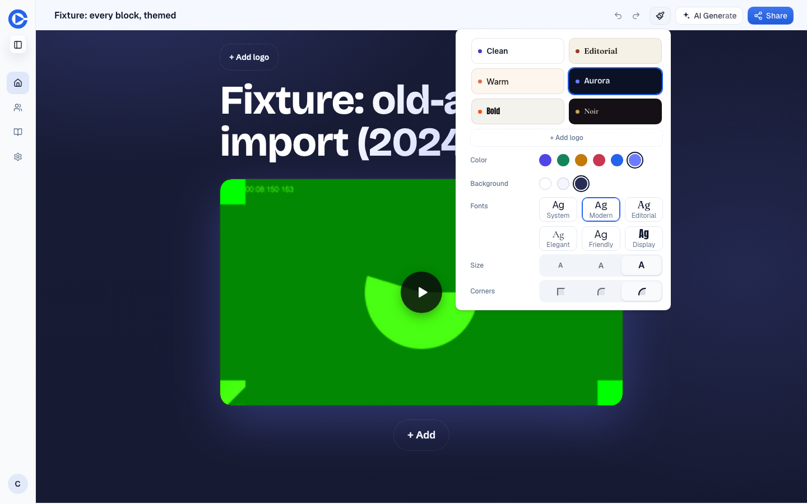
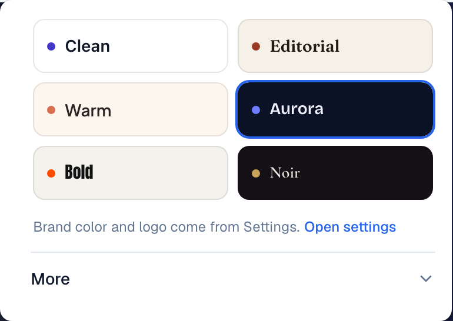
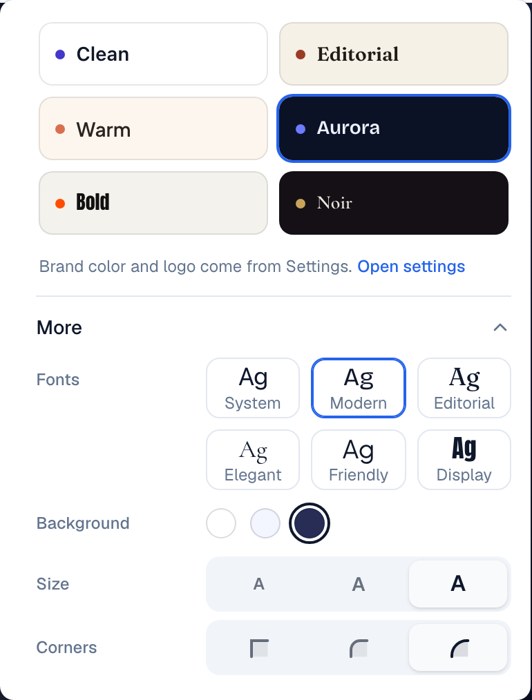
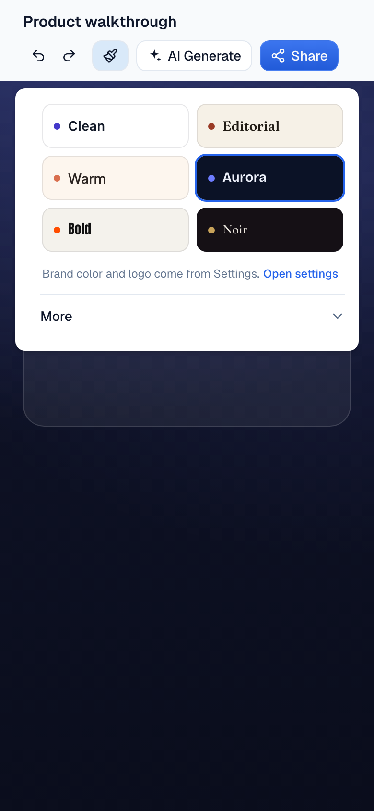

Style panel: presets first, the levers under "More"
Editor topbar, Page style panel. The theme system itself (presets as macros over levers) does not change.
The panel opens on the six preset cards and a collapsed "More". More holds the levers William blessed in July (Fonts, Background, Size, Corners) plus the page accent colour, which defaults to the brand colour from Settings. "Add logo" and logo alignment leave the panel: the logo is added on the canvas and set once in Settings, and its alignment is a hero property. Nothing about storage or the CSS changes; this is only what the panel shows first.
The problem
The panel shows 29 choices at once (six presets, logo, alignment, colour dots, background, six fonts, size, corners). 9% of recent customer pages store any theme at all, and the per-lever overrides are single digits: font pair 9 pages, background tone 5, size 1, corners 1, out of 288. The colour row is the exception: 44 recent pages (15%) carry a non-default accent colour.
What it would look like
Before, every lever is open. After, presets and one disclosure.








What the data says
Theme stored on customer pages, last 90 days (288 pages)
| Value | Pages |
|---|---|
| No theme | 261 (91%) |
| clean | 9 |
| theme without a preset | 7 |
| aurora | 6 |
| bold | 2 |
| editorial | 1 |
| warm | 1 |
| noir | 1 |
All 27 themed customer pages are recent; the all-time share is below 1%.
Lever overrides stored, last 90 days
| Override | Pages |
|---|---|
| font pair (system 6, editorial 2, modern 1) | 9 |
| background tone (dark 3, tint 2) | 5 |
| size step m | 1 |
| corners pill | 1 |
Colour and logo
| Measure | Count |
|---|---|
| Recent pages with hero ctaColor set | 223 of 288 |
| of which the default blue #2563eb | 179 |
| of which another colour | 44 (15%) |
| Customer workspaces with a brand logo in Settings | 151 of 155 rows |
| with a brand primary colour in Settings | 16 |
The accent still lives on the hero's ctaColor, not in the theme (open item in the July design). 14 themed pages also carry a ctaColor.
Options
Keeps the macro-over-levers system intact and reachable, and shows a first-time rep six cards instead of 29 controls. The one-in-seven pages that change the accent colour still can, inside More.
Fewer controls, but it removes levers the preset system was built around in July (Size s/m/l was a stated requirement) for a saving of two rows that are already hidden under More in the recommended option.
Presets to the top, everything else below. Cheaper, but a new rep still meets 29 choices.
Questions for William
Recommended: Keep them under More. The lever system is the architecture; hiding costs nothing, deleting reopens a settled design.
Recommended: Per page under More. 44 of 288 recent pages use a non-default colour, and the brand-colour setting is filled on only 16 workspaces today.
Recommended: Yes. U18 already reduces the three logo prompts to Settings plus one in-editor ask; the panel checkbox is the one to lose.
PRs once decided
editor/src/components/editor/ThemeStylePanel.tsx: presets, Settings line, More disclosure (Fonts, Background, Size, Corners, Colour). Delete the logo and alignment rows. Evidence: panel desktop and phone, More open and closed, a page with an override still showing it inside More.
The hero's logo alignment control lives with the logo on the canvas (edge-mounted, like the media grip). Depends on U18's logo decision.
New pages take ctaColor from Settings > Brand (the existing DEFAULT_CUSTOMER_BRAND_PRIMARY path). Existing pages untouched.